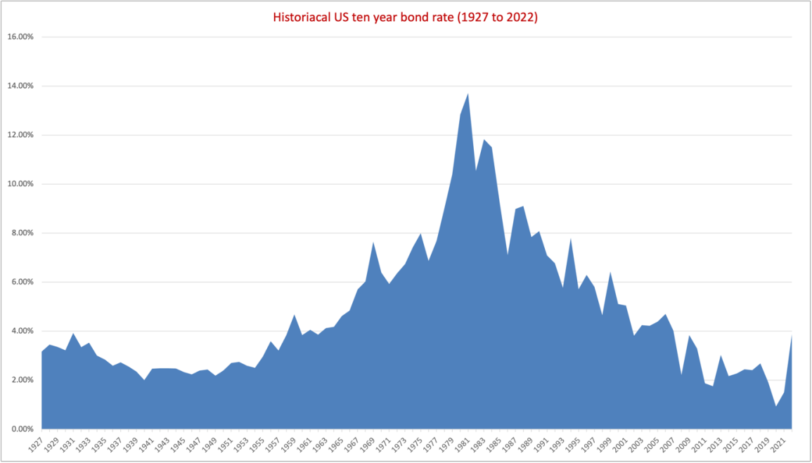
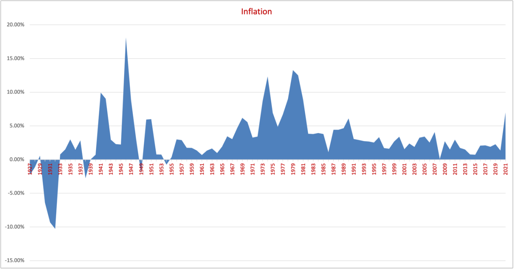
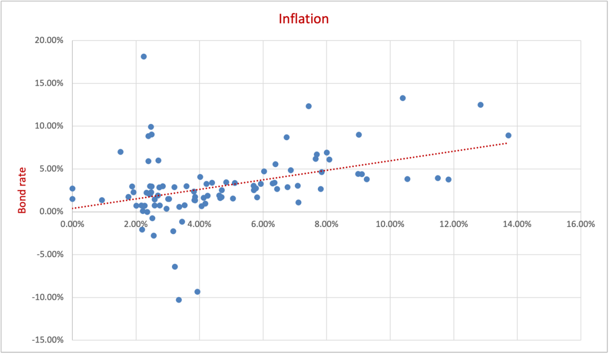

Introduction
The US S&P 500 index has returned an exceptional 500% on a nominal basis over the last 14 years, dwarfing all other asset classes. But the longest bull run in US history had an enormous tailwind in the form of unprecedented quantitative easing by the Federal Reserve, which ended last year (2022) in response to rising inflation. Historically, higher interest rates have resulted in slower economic activity, which corresponds to lower corporate earnings.
Many large US banks have highlighted a greater chance of a US recession in the coming year in their letters to investors, cautioning them to expect lower returns from the US market and advising them to diversify into other asset classes.
Historically, stocks have generated higher returns than any other asset class over the long term. The S&P 500 index, which represents about 80% of the total market capitalization of all publicly traded US stocks, has been the general benchmark for investors: one could invest in an index fund and rest assured. But this time-tested strategy could change in the next decade, as interest rates have been regressing towards the historical mean of 4.9% for the 10-year US Treasury note.
Interest rates have a greater impact on the economy in the short term, but the data shows that higher interest rates have not always pushed the economy into recession. Other factors may have considerable influence on economic growth.
Data sets and data analysis
Data sets are sourced from NYU (historical returns for the US), OECD (US annual inflation rate), the St. Louis Fed's FRED (nominal dollar index and global economic policy uncertainty index), the New York Fed (Global Supply Chain Pressure Index) and Nasdaq (crude oil prices).

| US 10-year Treasury bond rate, 1927–2021 | Value |
|---|---|
| Mean | 4.90% |
| Median | 3.98% |
| Standard deviation | 2.89% |
| Minimum | 0.93% |
| Maximum | 13.89% |
| Years | 96 |
Exhibit 2: Descriptive statistics of the annual US 10-year Treasury bond rate.


| Period | S&P 500 (incl. dividends) | 3-month T-bills | 10-yr T-bond | Baa corp. bond | Real estate | Gold |
|---|---|---|---|---|---|---|
| 1928–2022 | 9.64% | 3.28% | 4.57% | 6.68% | 4.23% | 4.83% |
| 1973–2022 | 10.24% | 4.34% | 6.12% | 8.43% | 5.38% | 6.91% |
| 2013–2022 | 12.44% | 0.78% | 0.12% | 3.45% | 7.59% | 0.96% |
Exhibit 5: Average annual returns by asset class. The S&P 500 outperformed over the last ten years (2013–2022).
US government Treasury bonds are considered the safest investment. Yields usually rise with longer maturities, giving an upward-sloping "normal" yield curve. When investor confidence is low because of a bleak economic outlook, the opposite happens: an inverted, downward-sloping curve, which signals a recession. The Federal Reserve started raising interest rates in 2022 to bring inflation, which peaked at about 9% in mid-2022, back towards its 2% target. In a high-interest-rate environment, slower growth can be expected, which could weigh on corporate earnings and stock returns.
Analyzing macro-economic factors
Apart from interest rates, other factors influence economic growth. Since the US is a major trading partner for many nations, I considered four global indicators:
- Nominal Broad U.S. Dollar Index (St. Louis Fed, FRED)
- Global Supply Chain Pressure Index (Federal Reserve Bank of New York)
- Global Economic Policy Uncertainty Index (St. Louis Fed, FRED)
- Crude oil prices (Nasdaq)
| Factor | Correlation with S&P 500 |
|---|---|
| Global Supply Chain Pressure Index | 0.88 |
| Nominal Broad U.S. Dollar Index | 0.62 |
| Global Economic Policy Uncertainty Index | 0.61 |
| Crude oil price | 0.10 |
Exhibit 6: Correlation of each factor with the S&P 500 over the period.
Crude oil prices have the lowest correlation with the S&P 500, lower than one might expect for an energy-intensive economy. This is consistent with the US's growing energy independence: the US has been a net exporter of refined petroleum products for over a decade and, since 2020, a net exporter of petroleum overall.
The Global Supply Chain Pressure Index has the highest correlation, followed by the dollar index and policy uncertainty. A high correlation shows these indicators moved together with the S&P 500 over the period; it does not show that one drives the other, since series that trend over the same years tend to correlate. They are best read as indicators worth watching alongside interest rates, not as predictors of returns.